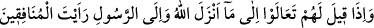
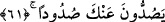
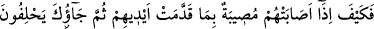
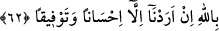

hükmetti. Bu ise onun hükmüne râzı olmayarak senin yanına geldi.” dedi. Hz. Ömer
münâfığa, “Öyle mi?” deyince, münâfık: “Evet” dedi. Bunun üzerine Hz. Ömer: “Ben
gelene kadar yerinizden ayrılmayın.” diyerek içeri girdi. Kılıcını kuşanıp dışarı çıktı,
münâfığı cezalandırdı. “Allah ve Rasûlü’nün hükmüne râzı olmayana ben işte böyle
hüküm veririm.” dedi. İşte bu âyet bunun üzerine nâzil olmuştur. Bu olayın akabinde
Cibril (a.s) inerek “Ömer, hak ile bâtılı ayırdetti ve ona “Faruk” adı verildi[62] dedi.
Tâğût, Ka’b b. Eşref’tir. Ona tâğut denilmesinin sebebi, azgınlıkta ve Hz.
Peygamber’e düşmanlıkta çok ileri gitmesidir. Batıl ile hükmedip batıl için çalışanlar
da tâğut olma konusunda Ka’b ile aynı hükümdedir.
“Şeytan” yâni Ka’b b. Eşref ya da gerçek şeytan “da onları büsbütün ” sonsuz bir
saptırma ile “saptırmak istiyor” ki doğru yolu bulmasınlar.
61- Onlara: Allah’ın indirdiğine (Kitab’a) ve Rasûl’e gelin (onlara başvuralım),
denildiği zaman, münâfıkların senden iyice uzaklaştıklarını görürsün.
“Onlara” yâni münâfıklara: “Allah’ın indirdiğine” Allah Teâlâ’nın, kitabında
emrettiği şeylere “ve Rasûl’e” peygamberinin emrettiği şeylere “gelin” buyurun
“denildiği zaman, münâfıkların senden iyice uzaklaştıklarını” tamâmen yüz
çevirdiklerini, “görürsün.” Bu ifâdeyle münâfıkların nifâkı tescîl edilmiş ve onunla
yerilmişlerdir. Hükmün illeti ve onların gözle görüldüğü bildirilmiştir.
62- Nasıl elleriyle yaptıkları yüzünden başlarına bir felâket gelince hemen, “Biz
yalnızca iyilik etmek ve arayı bulmak istedik” diye yemin ederek sana gelirler!
“Nasıl da”, halleri nasıl olacak, ne yapacaklar? Yâni, o zaman münâfıklar âciz
kalacaklar ve hiç bir şey yapamayacaklar. “Elleriyle yaptıkları yüzünden” işledikleri
suçlar sebebiyle ki onlardan biri tâğut’u hakem kabul etmek ve Peygamber (s.a.v.)’in
hükmüne râzı olmamaktır. “Başlarına bir felâket gelince” hemen ikiyüzlü olduklarının
ortaya çıkıp rezil olmalarıyla başlarına bir musîbet geldiği vakit “Biz yalnızca iyilik
etmek ve arayı bulmak istedik” Senden başkasının hakemliğine başvurmakla ancak
meseleyi en güzel bir şekilde halletmek, iki hasmın arasını bulmak istedik. Yoksa ne
sana karşı çıkmak ne de hükmüne rıza göstermemek niyetinde idik. Dolayısıyla